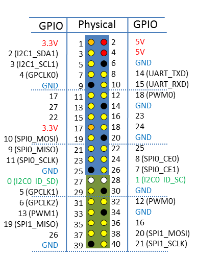

라즈베리파이에 GPIO 파이썬을 이용해 초음파 센서(HC-SR04) 제어하기
라즈베리파이에 GPIO 파이썬을 이용해 초음파 센서(HC-SR04) 제어하기
안녕하세요.
이번에 소개할 내용은 라즈베리파이에 GPIO, 파이썬을 이용해 초음파 센서(HC-SR04) 제어하기 입니다.
초음파 센서를 통해서 거리를 계산을 하거나 할경우 이용을 하실수가 있습니다.
초음파 센서를 제어하기 위해선 우선 준비물이 필요합니다.
준비물
- 라즈베리파이 OS가 설치된 라즈베리파이
- ELEGOO Arduino용 HC-SR04 초음파 센서 1개
- 점퍼케이블 암,수 4줄
- 플레이트 보드 1개
- 1KΩ 저항 1개, 2KΩ저항 1개
준비물이 준비가 되셨으면 본격적으로 초음파 센서 제어를 해보도록 하겠습니다.
아래의 회로도를 참고하셔서 케이블과 센서를 연결을 해주시기 바랍니다.


- 1KΩ 저항은 Echo와 연결을 해주세요.
- 2KΩ 저항은 GND와 연결을 해주세요.
- Trig는 GPIO 17번과 연결을 해주세요.
- Echo는 GPIO 18번과 연결을 해주세요.
Echo의 경우 5V의 전압을 사용하기 때문에
저항을 이용해서 라즈베리파이에 부담을 주지않는 3.3V로 다시 낮춰 주셔야만 합니다.
| Color | Pi GPIO Pin | Notes |
|---|---|---|
| Red | 2 | 5V |
| Yellow | 11 | 17 |
| White | 12 | 18(PWM0) |
| Gray | 39 | GND |
GPIO핀에 대한 자세한 내용을 원하시는 분은 아래의 링크를 들어가셔서 참고해 주세요.
라즈베리파이에서 GPIO를 사용하기전 알아두어야 할 사항
위와같이 라즈베리파이와 플레이트 보드의 구성을 모두 마치셨으면
이제 본격적인 코딩을 해야만 합니다.
Visual Studio Code(비주얼 스튜디오 코드)를 실행해 주시기 바랍니다
실행을 하셨으면 파일명을 gpio_HC-SR04.py로 추가를 해주시기 바랍니다.
간단한 예제로 파이썬을 이용해 초음파 센서(HC-SR04)를 제어할 소스를 작성 하겠습니다.
아래의 코드를 입력해 주세요.
1 | import RPi.GPIO as GPIO |
작성하신 소스를 라즈베리파이에 넣고 실행을 하기위해
소스파일을 라즈베리파이의 임의의 폴더에 올려주시기 바랍니다.
그리고 라즈베리파이를 VNC를 이용해 접속후 터미널을 실행해 주세요.
라즈베리파이의 리스트 목록을 보시면 gpio_HC-SR04.py 파일명으로 파일이 올라가 있는걸 확인할수 있습니다.
이제 명령어로 초음파 센서(HC-SR04)가 작동하는지 확인 해보도록 하겠습니다.
아래의 명령어를 입력해 주세요.
1 | # 파이썬 2.x버전대를 이용하실경우 |
1 | # 파이썬 3.x버전대를 이용하실경우 |
저의 경우는 파이썬을 3.x버전대를 사용하고 있기에 3.x의 명령어로 실행을 하도록 하겠습니다.
위와같이 초음파가 실행되면 거리에 대한 값이 터미널에 출력되는것을 확인 하실수 있습니다.
미묘한 오차는 발생할수는 있을수가 있겠습니다.
초음파 센서를 이용하시면 원거리의 값이나 가까이에 무엇인가 있을경우 측정을 하실때
유용하게 사용할수가 있겠습니다.
다음에는 좀더 다양한 방법으로 초음파 센서를 이용한 방법을 소개해 드리도록 하겠습니다.